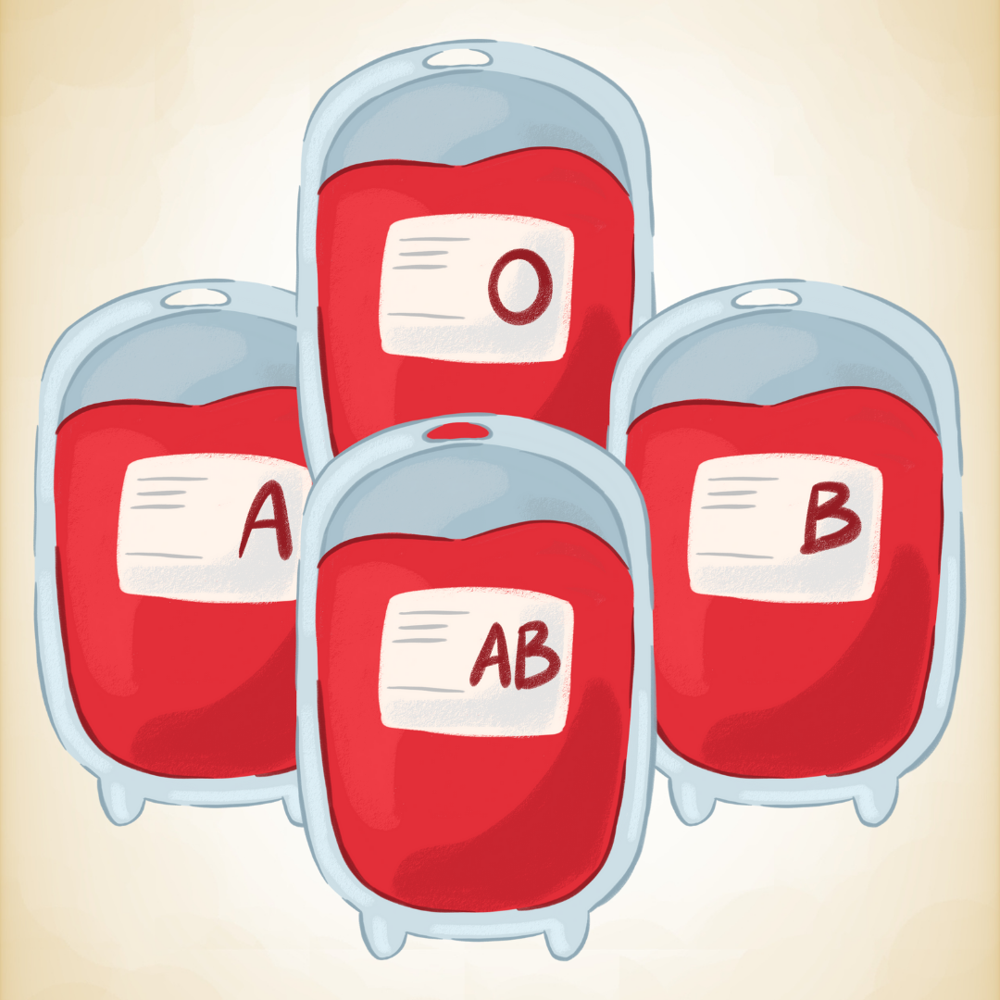
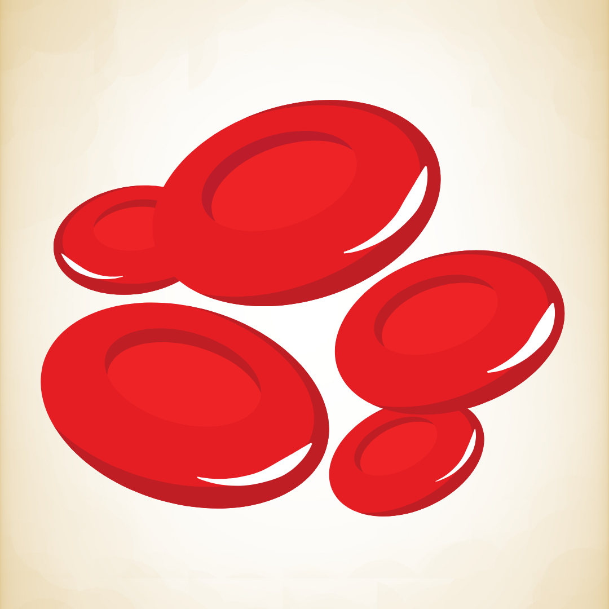
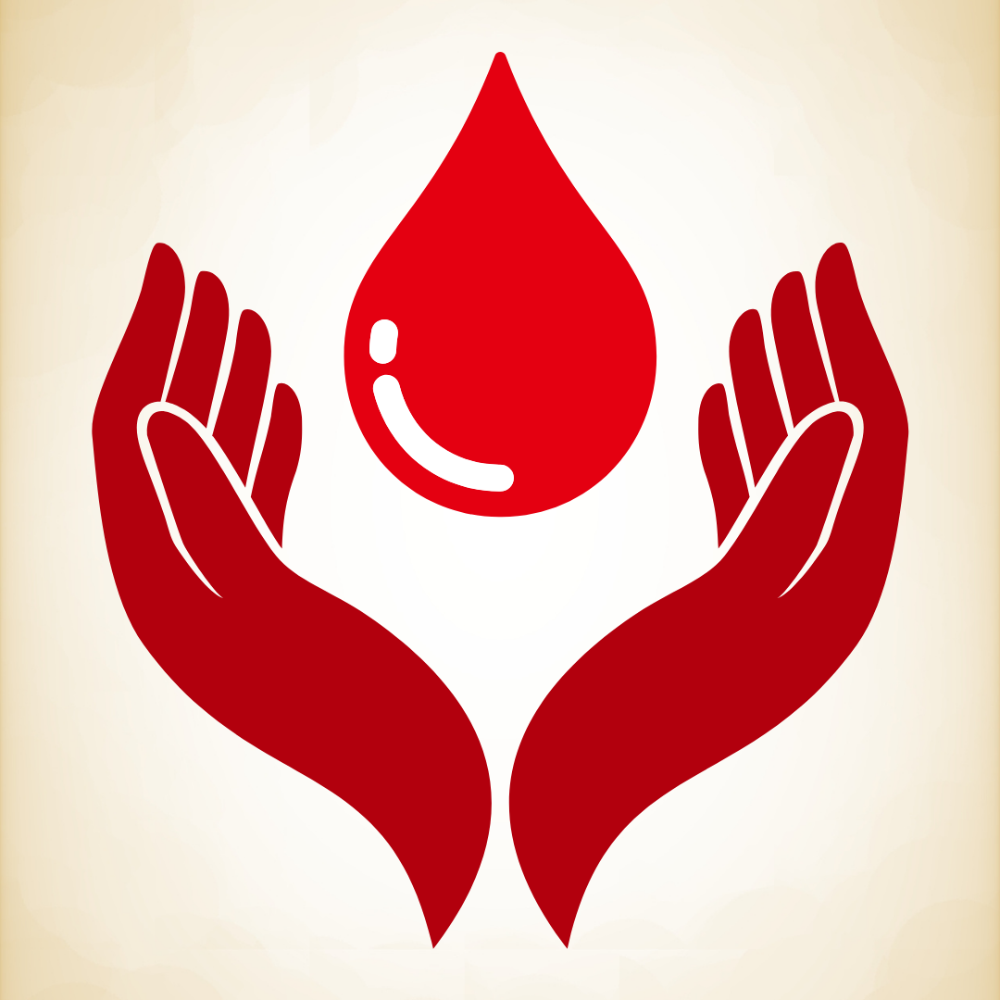
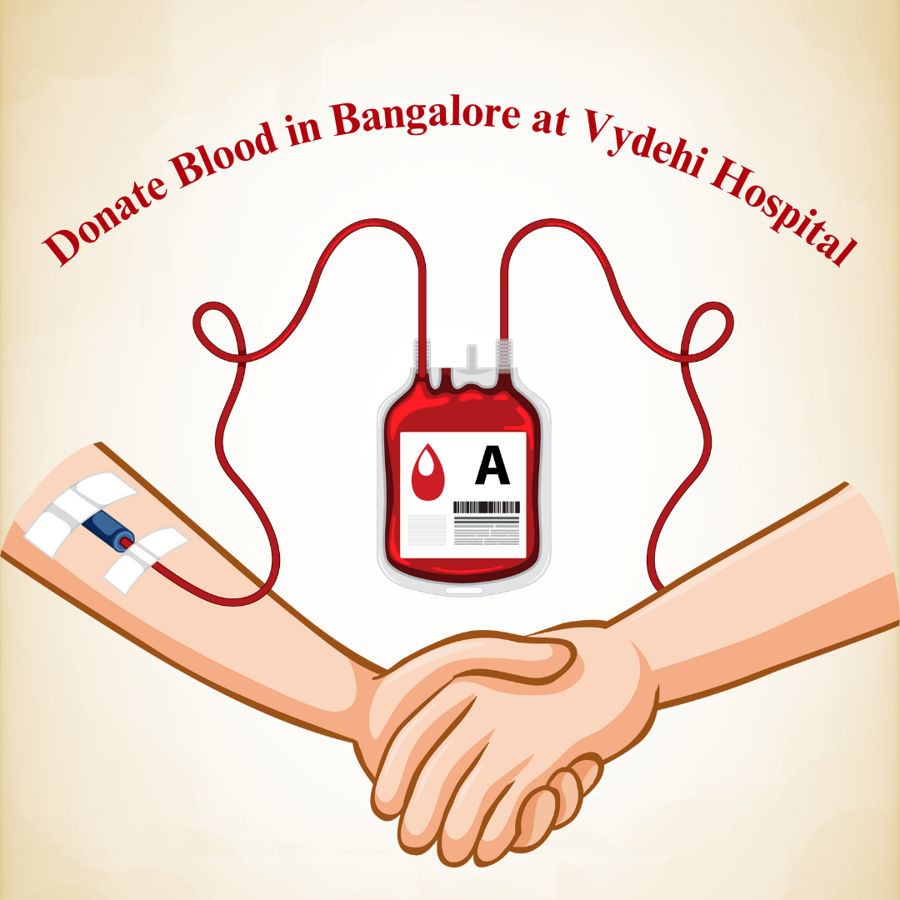

Blood Donation
Voluntary blood donors provide an important resource for patients who require blood and blood products.
Information about donating blood, available blood products and the support SANBS offers to communities.

Voluntary blood donors provide an important resource for patients who require blood and blood products.

Donated blood can be separated into red blood cells, plasma and platelets so that one donation can support different patient needs.

SANBS donor centres provide trained staff, health checks and a controlled environment for blood donation.

Schools, businesses, churches and community organisations can work with SANBS to organise a blood drive.
No services match your search yet. Try a broader term such as blood or donor.
Donors must meet the latest SANBS age, weight, health and other eligibility requirements. Drink water, eat normally before donating, bring identification and always check the official SANBS requirements before visiting.
Most healthy adults can donate whole blood every 12 weeks, subject to SANBS eligibility rules and donor health checks.
Eat a normal meal before your appointment and drink water. Avoid alcohol and heavy fatty foods before donation.
Yes. Schools, workplaces and community groups are encouraged to contact SANBS to plan a blood drive and raise awareness.